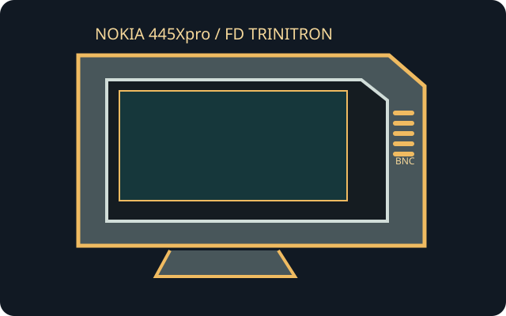

[ INDIVIDUAL COMPONENT // NOKIA ]
Nokia 445Xpro
A 21-inch professional multiscan monitor from Nokia's flat Trinitron line, documented with extensive high-resolution timing.

IDENTIFICATION: The exact model is 445Xpro (also written 445XPRO in archival service documentation). Confirm the complete regional label; do not apply values from another Nokia 44x display.
Model specifications
| Tube / viewable area | Nokia 445Xpro; 21-inch nominal flat FD Trinitron CRT, about 19.6-inch viewable diagonal. |
|---|---|
| Pitch | 0.24 mm aperture-grille pitch. |
| Resolution / refresh | No fixed native pixel matrix. Maximum documented mode: 1800 × 1440 at 80 Hz; scan range 29–125 kHz horizontal and 50–180 Hz vertical. Check the timing list and verify the host mode before use. |
| Connectors | HD15 / DE-15 analog RGB and separate five-BNC RGBHV input on documented variants; inspect the actual rear panel and select the signal method supported by that unit. |
| Power | AC mains through an integral supply; the regional model's nameplate determines voltage and frequency. Allow approximately 150 W operating for circuit/loading estimates; exact draw varies by mode. |
| Host compatibility | Accepts analog RGB at supported multiscan timings. Digital-only video needs an active DAC; passive HDMI/DisplayPort adapters cannot generate analog CRT signals. |
Compatibility and safety notes
Use only the connectors actually fitted and follow the service manual for sync/cable arrangement. Do not assume every mode reaches the listed maximum refresh. This heavy CRT contains hazardous stored voltage; disconnect external power for cleaning and leave all internal adjustment or repair to a qualified technician.
Service documentation and references
- Nokia 445XPRO Service Manual — Internet ArchiveScanned model-specific service document.
- Nokia Professional Line — 445PRO documentationArchived manufacturer product literature for 445Xpro specifications.